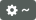

underhood
What's under the hood: code, a model, or both?
underhood is a README badge with two checkboxes. The mech gear stands for deterministic code. The magic stands for inference or AI. You can tell at a glance whether a project can give the same answer twice, be tested with unit tests or evals, and whether the software might have an opinion of its own.
Make your ownThe difference
Deterministic code and inference code
Deterministic code follows rules someone wrote down. Give it the same input and it returns the same output, every time. You can read the source to find out why it did what it did.
Inference code hands the decision to a trained model. Its behavior lives in weights and prompts instead of source you can trace. The output is drawn from a distribution, P(y | x), so it can change between runs, between model versions, and between providers, even when your own code hasn't changed.
| Mech: deterministic |  Magic: inference Magic: inference | |
|---|---|---|
| Where the behavior lives | Source code you can read | Model weights and prompts |
| Same input twice | Same output | Possibly a different output |
| How you check it | Tests that pass or fail | Evals that score a success rate |
| When it changes | When someone edits the code | Also when the model, prompt or provider changes |
| What it needs to run | A CPU | A model: local weights or an API key and a network |
Reading the badge
The mech, the magic, and their marks
The badge describes what happens when the shipped program runs, not how it was written. The mech is on the left and the magic is on the right. Each gets its own mark. Something has to be able to run, so if one side is ✗, the other is ✓. Both sides can be ~ when either one can do the job alone.
| Mech: deterministic code | Magic: inference | |
|---|---|---|
| ✓required | Needs its own codeThe project's logic makes real decisions: parsing, branching, validation, transforming data. | Needs a modelThe main thing the project does calls a trained model. |
| ~optional |  Has code, doesn't need itScripts or tools help, but the model can do the job without them. |
Can use a model, doesn't need itEverything works with the model turned off. The model adds extra features. |
| ✗absent | No code at allThe project is only prompts, skills or instructions for a model. Almost nothing is like this yet. | No model runsSame input, same output, every time. |
Edge cases
What counts
The badge describes how the program runs, not how it was written.
The output still depends on weights you don't control, and a hosted model can change under you.
These are Software 2.0: trained weights decide the output.
Only the shipped program's runtime matters.
Calling the model is what the library is for, and it still has its own logic: requests, retries, parsing.
The loader is still code, so the mech is never ✗. Use ~ if the skills work without the loader and ✓ if they don't.
Nothing runs, so the badge doesn't apply.
Add it to a README
Make your badge
Pick a mark for each side. The snippet links the badge back to this page, so anyone who clicks it can find out what it means. The full definition is in the spec.
If one side is ✗, the other has to be ✓, or nothing the project needs can run. A project with no code and no model, like a docs repo, should leave the badge off.
Design
Why it looks this way
The badge answers "what's under the hood?" for the tools we use, so its color comes from the car. Red also means caution. This is a fast-moving field, and it's worth knowing what you're running before you trust it.
Gears are the plainest picture of a machine: the parts mesh the same way every time, so turning the input turns the output by exactly the same amount. That's deterministic code.
The ✨ sparkle is already how the field marks AI features, so people recognize it at a glance.
Historical note
The split follows Andrej Karpathy's Software 1.0, 2.0 and 3.0. Software 1.0 is code a programmer writes. Software 2.0 is neural network weights that an optimizer finds from data. Software 3.0 is a large language model programmed in plain English. The mech marks 1.0. The magic marks 2.0 and 3.0, since both run a trained model.
Karpathy has also described 2.0 gradually replacing 1.0 code, as neural networks took over more of Tesla's Autopilot. A project with no 1.0 code at all barely exists today. That is the direction things are moving, so the mech can be crossed out.
Sources: “Software 2.0” (2017) and “Software Is Changing (Again)”, YC AI Startup School (2025).